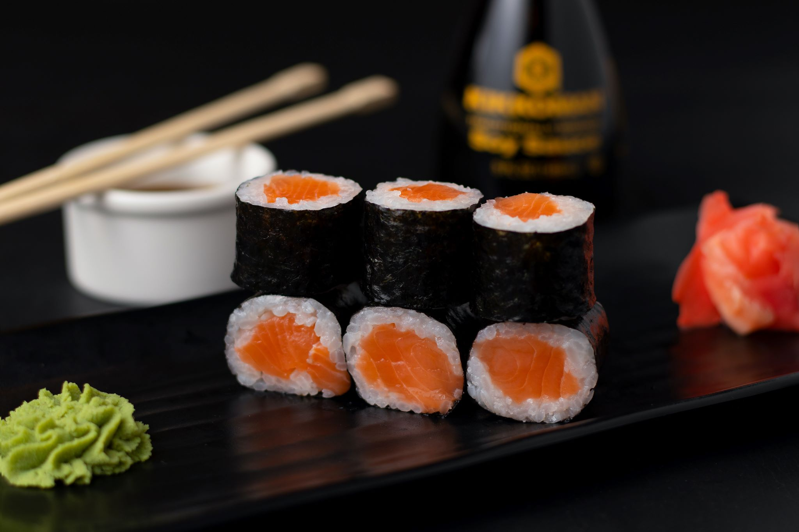

Piatto di speciale di Andrea
Hosomaki con salsa di soia
La semplicità dell'hosomaki, il cuore della cucina giapponese

I nostri ingredienti
La nostra ricetta
- Per preparare gli hosomaki come prima cosa preparate il riso per sushi. Una volta pronto lasciatelo intiepidire e occupatevi della preparazione del salmone che servirà per realizzare i vostri hosomaki.
- Dovrete munirvi di un filetto già abbatuto, senza lische e pelle e ben rifilato. Tagliate il filetto di salmone controfibra, in modo da ottenere delle strisce della lunghezza del foglio d'alga (circa 18 cm) e spesse 1 cm
- Dovrete munirvi di un filetto già abbatuto, senza lische e pelle e ben rifilato. Tagliate il filetto di salmone controfibra, in modo da ottenere delle strisce della lunghezza del foglio d'alga (circa 18 cm) e spesse 1 cm
- Impellicolate il makisu e stendetelo su un piano, posizionate sopra il foglio di alga nori con la parte più lucida a contatto con la stuoia. L'alga deve essere posizionata verso di voi, quasi al bordo del makisu
- Inumiditevi le mani con dell'acqua acidulata e prelevate circa 60g di riso cotto. Sistematelo sulla superficie più ruvida dell'alga e spargetelo spingendolo con le dita
- Dovrete lasciare 1 cm di spazio libero dal bordo superiore e lo spessore del riso non dovrà essere troppo alto. Con l'indice prelevate una punta di wasabi e stendetelo al centro del riso, in modo da creare una striscia
- Prendete poi una striscia di salmone e posizionatela al centro del riso. Se non dovesse bastare aggiungete anche l'altro pezzetto. Sollevate il bordo della stuoia più vicino a voi, tenendo ferma la striscia di salmone con i due anulari
- Ruotate la stuoia, posizionando i pollici sotto e premete con le altre dita l'ingrediente centrale verso l'interno. Fate quindi avanzare un po' il rotolo, in modo che la striscia scoperta di alga sigilli il tutto.
- L'umidità del riso fungerà da collante, se non dovesse bastare potete inumidire la parte scoperta dell'alga. Modellate il rotolo all'interno della stuoia premendo uniformemente con le mani, spostandovi nel senso della lunghezza
- Srotolate la stuoia e posizionate l'hosomaki su un tagliere. Inumidite un coltello ben affilato con acqua non acidulata. In questo modo non si rovinerà la lama. Tagliate a metà il rotolo, affiancate i due pezzi ottenuti e tagliate ciascuno in tre parti uguali
- Avrete ottenuto i sei pezzi. Non esercitate una pressione troppo forte durante questo passaggio. Disponeteli su un piatto da portata e sistemate di lato dello zenzero sott'aceto
- Accompagnate gli hosomaki con della salsa di soia e serviteli

Consiglio
Al posto del salmone potete utilizzare tonno o cetriolo. Al posto dell'alga nori l'hosomaki può essere avvolto da una sottile frittata, da una carta di riso o soia e da foglia di shiso. Per una cena sushi ancora più varia provate anche a realizzare futomaki e gunkanmaki
Conservazione
Consigliamo di consumare gli hosomaki appena pronti
Per un consumo sicuro del pesce crudo, marinato o semicotto
Prima di consumare il pesce crudo, marinato o non perfettamente cotto, si raccomanda di congelare per almeno 96 ore a -18 gradi in congelatore domestico contrassegnato da 3 o più stelle, come da linee guida del Ministero della salute
tabella nutrizionale
| Valori Nutrizionali |
per 100g |
| Valori Nutrizionali |
100g |
| Calorie |
164 Kcal |
| Carboidrati |
19.20g |
| Proteine |
9.00g |
| Grassi |
6.20g |
| Colesterolo |
85.30mg |
| Fibre |
1.70g |
Altre idee sfiziose:
Non è giornata da sushi? Prova con questi piatti
Piatto speciale di Michele Fenu
Piatto speciale di Michela Loddo
Piatto speciale di Maurizio Corpino
torna alla home